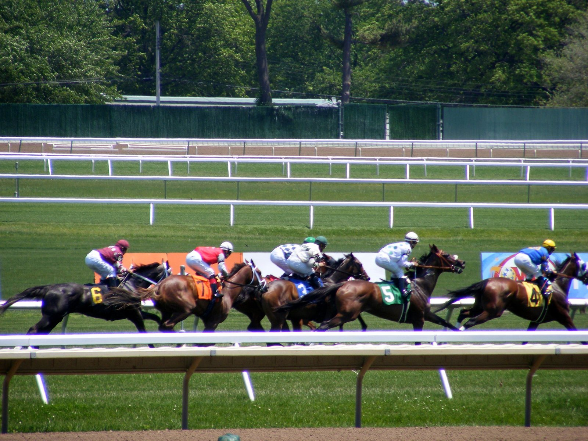

Outfielder remonta ocho cuerpos en la recta y caza a Throckmorton en Keeneland
Outfielder, preparado por Wesley Ward, superó por medio cuerpo a Throckmorton en una carrera de condiciones para tres años sobre la hierba de Keeneland tras remontar desde el fondo del pelotón.

A la entrada de la recta, la carrera parecía tener dueño. Throckmorton, hijo de Caracaro, había ganado la salida y marcaba un ritmo exigente en cabeza. Irad Ortiz Jr. llevaba a Outfielder, favorito a 17-10, en sexta posición: nunca había corrido tan retrasado. Con un solo rival por detrás, el potro de Speightstown tenía siete u ocho cuerpos por recuperar, y el líder no daba señales de ceder.
La reacción llegó en el último furlong. Outfielder atrapó a Throckmorton en los últimos trancos y ganó por medio cuerpo. Paró el crono en 1:02.41 para los cinco furlongs y medio, sobre piso firme.
La prueba, del jueves y dotada con 138.742 dólares, era apenas la segunda carrera de condiciones de su vida. Además, corría por primera vez con Lasix. Llegaba de ser cuarto, como favorito, en el Mahony Stakes (GIII) de Saratoga y décimo, a menos de seis cuerpos del ganador, en la Commonwealth Cup (G1) de Royal Ascot.
Antes de esas dos salidas, Outfielder se había rehecho de un decepcionante Breeders' Cup Juvenile Turf (GI) con dos triunfos: el Animal Kingdom Stakes, sobre la arena sintética de Turfway, y el William Walker Stakes de Churchill Downs. Suma ya cinco victorias en nueve salidas y 552.426 dólares en premios. Throckmorton, ganador de stakes, había sido tercero en ese Walker y segundo a un cuello en el Quick Call Stakes (GIII).
El potro corre para AMO Racing USA, Two Eight Racing y el propio Ward, y lo crió en Kentucky SF Bloodstock. Costó 850.000 dólares como yearling en Fasig-Tipton Saratoga. Su madre, Notte d'Oro, es una ganadora de stakes por Medaglia d'Oro e hija de May Night, madre a su vez de Red Rifle. El cruce Speightstown–Medaglia d'Oro ha dado 54 ganadores, 14 de ellos con black-type, entre ellos Rock Fall, Olympiad, Prince of Monaco y Competitionofideas.
Un hermano de Outfielder por Quality Road se vendió el mes pasado por 550.000 dólares en la subasta de septiembre de Keeneland. Notte d'Oro ha vuelto a ser cubierta por Quality Road.
Por Martín Larrañeta